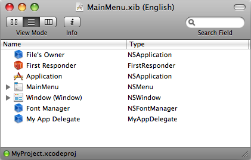

Please note: this article is part of the older "Objective-C era" on Cocoa with Love. I don't keep these articles up-to-date; please be wary of broken code or potentially out-of-date information. Read "A new era for Cocoa with Love" for more.
Singletons, AppDelegates and top-level data.
If you require only a single instance of an object in your application, where should it go? How should you control and manage it? Here are some different approaches, their implementations, their strengths and their weaknesses.
A little about global variables
They should scare you
Global variables is a term that invokes a sense of dread in experienced programmers. They are feared because a program filled with global variables (when it should use scoped variables instead) is a program without structure; a totally unmanageable mess.
This post will be entirely about writing and using global variables.
They're essential
The reality is that applications need to have some global state; we must have global variables. A variable will need to be global if all of the following are true:
- No other object owns, manages or is otherwise responsible for it
- There is exactly one in the whole program
- It is not a constant (like a string or number)
If all of these are true, then you should use a global variable.
If you're wondering, variables that fall outside these rules should be (respectively):
- child variables of the object that manages them
- children of the object that manages the collection
- a
#defineor aconst(constants are state for the compiler, not the program)
In Cocoa, they're not quite global
Actually, what I will be showing are the "in practice" global variables of a Cocoa program — in reality, none of the techniques I show you will be true global variables in the Standard C Language sense but these approaches have replaced true global variables in Cocoa programs in almost all cases.
I will be showing you top-level child objects (children of the application delegate) and singleton objects. Explaining why these are normally considered equivalent to globals:
- The application object is the first constructed object in the program from which all other hierarchically arranged objects are constructed, making it effectively the top-level scope in the program (like a global scope). The application delegate should be considered a basic extension of the application object itself (especially since you should never override the application class).
- A singleton is an object that can be allocated only once (and can't be deleted) — making it a single, global instance. While singletons are stored in a true global variable, they are never accessed that way in Objective-C (a class method is used to access them), providing a least some abstraction around the implementation.
AppDelegates and AppControllers
As every Cocoa programmer knows, an application delegate is created in the MainMenu.xib file:
or the MainWindow.xib file for the iPhoneSDK.
A globally accessed variable can be initialized in the applicationDidFinishLauching delegate method:
- (void)applicationDidFinishLaunching:(NSNotification *)aNotification
{
myGlobalObject = [[MyGlobalObject alloc] init];
}and assuming myGlobalObject has an associated getter method, you can now access it globally using:
[[NSApp delegate] myGlobalObject]or on the iPhone:
[[UIApplication sharedApplication].delegate myGlobalObject]Since the delegate property returns an id (instead of the actual class of your delegate), you can't use property notation for the myGlobalObject itself unless the myGlobalObject is a property and you wrap the delegate in parentheses and inside the parentheses cast the delegate to your application delegate's class, like this:
((MyAppDelegate *)[UIApplication sharedApplication].delegate).myGlobalObjectAlthough I have seen people declare the following macro in their delegate's header:
#define UIAppDelegate \
((MyAppDelegate *)[UIApplication sharedApplication].delegate)which then allows you to use:
UIAppDelegate.myGlobalObjectfrom anywhere that includes your delegate's header.
Why AppDelegates are bad
Having explained that the above could be done, I will tell you that in my programs, I avoid using the AppDelegate for anything other than:
- implemenations of the
NSApplicationdelegate methods (includingapplicationDidFinishLaunching:to finalize application construction) - handling menu items for items that don't exist in a window (for example, opening the application Preferences window)
Relying on your AppDelegate object to manage your global variables can quickly get scary for the same reason that global variables in general are considered scary: you can easily put too much into this top level and it becomes a big, unstructured mess. This problem is an anti-pattern, often called the Big Ball of Mud.
It is a bad idea structurally for two reasons. The first is encapsulation. The AppDelegate should only really be connected to things related to the AppDelegate (i.e. the NSApplication object and related state). If you store data related to other objects inside the AppDelegate, you rob those other objects of control over themselves.
Separation of concerns is the other serious problem. It is not the application delegate's responsibility to be the gatekeeper and manager of non-Application-related variables within the program.
A well-designed program organizes its classes so that they are all discrete, self-contained entities, shoving connections to everything into the AppDelegate violates this idea.
Singletons in Cocoa
The solution to the encapsulation problem is to create classes that manage any global data as discreet modules. This is done through a singleton.
The basic recipe for making a singleton is given by Apple: Creating a Singleton Instance.
I personally like to put these singleton methods into a macro, which you can download in my CWLSynthesizeSingleton.h file. If you #import this header at the top of a class implementation, then all you need to do is write:
CWL_SYNTHESIZE_SINGLETON_FOR_CLASS(MyClassName);inside the @implementation MyClassName declaration and your class will become a singleton. You will also need to add the line:
CWL_DECLARE_SINGLETON_FOR_CLASS(MyClassName)in the method declarations section of the header file for MyClassName so the singleton accessor method can be found from other source files if they #import the header.
Once your class is a singleton, you can access the instance of it using the line:
[MyClassName sharedMyClassName];Note: A singleton does not need to be explicitly allocated or initialized (theallocandinitmethods will be called automatically on first access) but you can still implement the defaultinitmethod if you want to perform initialization.
Advantages of a singleton
A well-designed singleton is a discrete, self-managing object that manages a specific role within your program.
Variables hung off the Application delegate should be limited to objects that relate to the Application delegate in some way. A singleton should be entirely focussed on its own specific role and responsibilities. To avoid the anti-pattern known as "coupling" your singletons should have zero (or practically zero) connections to the rest of your program — they should be stand-alone little pockets of functionality.
Search the Mac OS X Reference in XCode for methods that begin with "shared" to see the ways in which Apple use singletons to create "manager" objects which allow you to get, set and manipulate entities that exist only once in a program.
Also, since the singleton is accessed through a method, there is some abstraction around the specific implementation — you could move from a true singleton to a per-thread based implementation if you needed, without changing the external interface.
Conclusion
Don't use globals unless you need to do so. An overwhelming majority of the data in your program has a sensible parent that is not the top-level. Singletons and top-level data should be used only when the data they contain truly belongs at the top level.
Cocoa singletons are flexible and useful when you need them. Using your application delegate to hold top-level data will work but try to limit its responsibilities to MainMenu.xib allocated objects where possible.
Simplifying your code using NSDictionary
Automated user interface testing on the iPhone